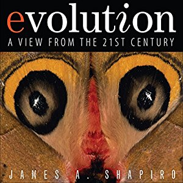

Читаем вместе книгу Джеймса Шапиро (James Shapiro) "Evolution: a view from the 21st century" (2012). Обновляем знания о зачерствелом предмете с помощью новых эмпирически проверяемых свидетельств, далеких от спекуляций и идеологического контекста.
По моему мнению, книга кардинально меняет «правила игры» в данной области (Карл Уоз)
Эти свидетельства удивят тех, кто до сих пор думает, что изменчивость случайна (Денис Ноубл)
Разрушает мифы… (Лин Маргулис)
Эта книга указывает на интересные вызовы будущего в исследовании нестандартных и антидогматических перспектив эволюционной биологии. (Эвиатар Нево)

Книга Джеймса Шапиро «Эволюция: взгляд из 21-го века» предлагает новую научную парадигму для биологической эволюции. Шапиро показывает, почему традиционная эволюционная теория (как она показана в нео-дарвинистском синтезе) перестала быть актуальной, и, что более важно, собирает молекулярно-генетические свидетельства и доказательства, основанные на последовательностях ДНК, в единую картину для современной трактовки фундаментальных эволюционных процессов.
Новая парадигма Шапиро, основанная на информационном и системном (холистическом) подходе, объединяет важные явления, такие как симбиогенез, эпигенетика и естественная генетическая инженерия. Он демонстрирует, как активные клеточные процессы могут приводить к быстрым и обширным эволюционным преобразованиям, которые наблюдаются на уровне ДНК и которые не могут быть адекватно объяснены более ранними теориями.
Книга «Эволюция: взгляд из 21-го века» послужит стимулом к широкомасштабной дискуссии в сообществе биологов и может изменить ваше собственное понимание того, как развивалась жизнь. Идеи, развиваемые автором, также серьезно повлияют на эволюционное исчисление, информатику и области, активно появляющиеся на стыке физических и биологических дисциплин.
Живые клетки: не такие уж слепые часовщики эволюции
Как клетки приобретают и используют внешнюю информацию и что это означает для эволюции.
Клеточные механизмы чтения-записи и информатические подходы
Клеточно-опосредованные предписания для генома на временных шкалах от дней до эпох.
Прорывы Природы: после Линнея и Дарвина
Растущие молекулярные свидетельства быстрых, крупномасштабных, эволюционных изменений.
Новое концептуальное основание эволюционным исследованиям в 21-м веке
Исследуя, как эволюционные новшества создаются, распространяются и преобразуются.
[Вместо введения] [Об авторе] [Читательский клуб книги]
"В книге в подробностях представлено новое описание эволюции, основанное на современном генетическом анализе. Шапиро написал побуждающую новаторскую рукопись, которая несомненно понравилась бы Дарвину".
— Сидней Альтман (Sidney Altman), Йельский университет, Нобелевский лауреат по химии, 1989.
"Основываясь на продолжительном и высококвалифицированном личном научном опыте, а также на уникальных прозрениях в области биологической функции, автор пришел к точке зрения на биологическую эволюцию, которая поможет раскрыть широкой аудитории заинтересованных читателей то, как живые существа развиваются совместно со средой посредством своей внутренней энергии".
— Вернер Арбер (Werner Arber), заслуженный профессор университета города Базель, Швейцария, Нобелевский лауреат в физиологии и медицине, 1978.
"Предложение профессора Шапиро — лучшая книга по современной фундаментальной биологии, которую я когда-либо видел. По моему мнению, книга кардинально меняет «правила игры» в данной области".
— Карл Уоз (Carl Woese), университет штат Иллинойс, первооткрыватель архей (Archaea), третьего царства жизни, национальная научная медаль 2000 (США).
"Это волнующее, ясно поданное, хотя и сложное, описание «естественной генетической инженерии» объясняет эволюционные процессы, которые опередили появление человека по крайней мере на 3 миллиарда лет. Детальное авторское обоснование всеобщего генетического динамизма, ДНК машинерии, репарации и рекомбинации в реальной жизни, от бактерий до млекопитающих, разрушает мифы… Старательный и авторитетный рассказ Шапиро является абсолютно научным и должен заинтересовать всех нас, кого заботит эволюция генетических систем."
— Лин Маргулис (Lynn Margulis), университет Амхерст штата Массачусетс; национальная академия наук (США), национальная научная медаль 1999 (США).
"От пересмотра центральной догмы молекулярной биологии до изложения системного подхода к эволюции эта книга — великолепный анализ ключевых вопросов происхождения изменчивости и, следовательно, эволюционных преобразований. Начиная с его раннего знакомства с работами и идеями Барбары МакКлинток до его работ по системной инженерии живых организмов, Джим Шапиро приобрел новое осмысление во всех центральных положениях эволюционной теории. Геном становится устройством хранения с функцией чтения-записи, а не единственным определяющим фактором наследственности. После прочтения книги, вы найдете крайне важным рассмотрение биологии по мере того, как наступает 21-ый век. Амбициозное название книги полностью оправдано."
"Книга дает фундаментальные биологические свидетельства происхождения изменчивости и эволюционных преобразований. Эти свидетельства удивят тех, кто до сих пор думает, что изменчивость случайна. Клетки и организмы чувствуют окружающую их среду и передают эту информацию в геном. Блестяще."
— Денис Ноубл (Denis Noble), Превосходнейший орден Британской империи, премия британского Королевского общества, Баллиол-колледж, Оксфордский университет; автор книги "Музыка жизни" (The Music of Life).
"Эволюция, или постоянное изменение в природе, — глубочайшая человеческая мысль. Она является центром всех физических, биологических и социальных систем и наук, соединяя энергию, материю, жизнь и сознание. Стремительная генетическая революция открыла нам новые информационные горизонты постоянной комбинаторной диверсификации, изменения и возникающих преобразований от простого к сложному в биологической эволюции. Очень многое в понимании сложной адаптивной геномной архитектуры, подвижной реорганизации, экспрессии и регуляции, а также происхождения жизни, клеток и биохимических сетей, является задачей будущего. Эта книга указывает на интересные вызовы будущего в исследовании нестандартных и антидогматических перспектив эволюционной биологии. Эволюционная роль неслучайных адаптивных мутаций, эпигенетики и функции и регуляции повторяющихся ДНК последовательностей является одной из таких исследовательских загадок предстоящего времени."
— Эвиатар Нево (Eviatar Nevo), университет Хайфы, национальная академия наук США, первопроходец "эволюционного каньона".